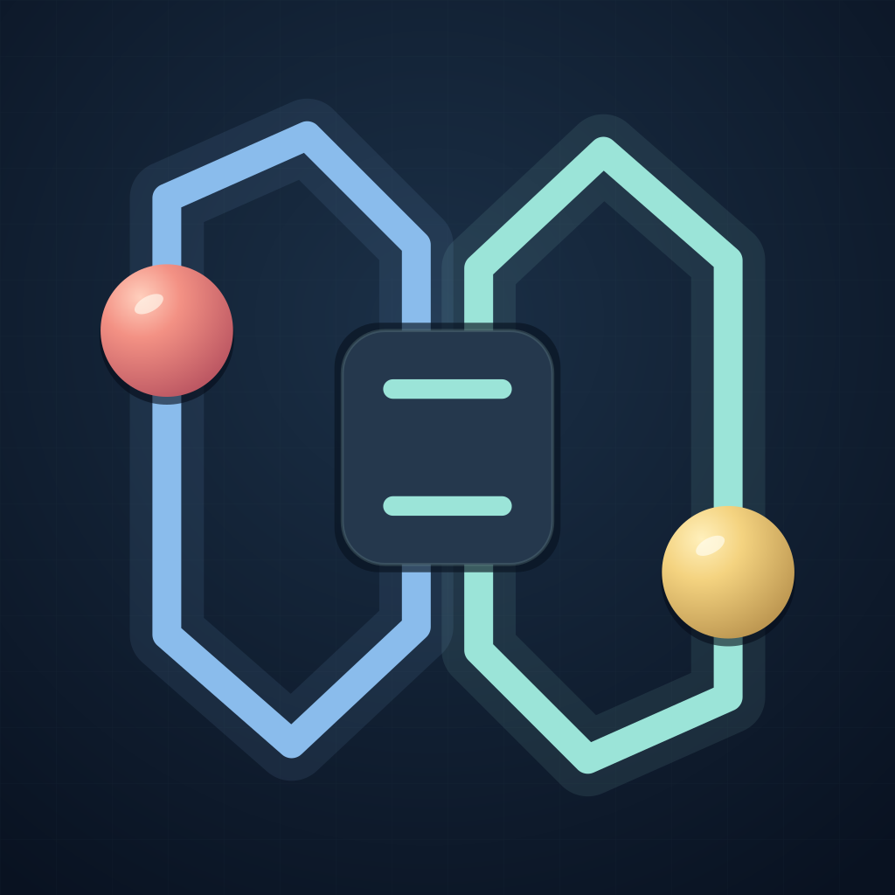

MARBLE PATHS
Sürüm bilgisi: 1.1.0 ve 1.2.0 · 400 bölüm, 20 dil. 1.2.0 güncellemesi oyuna reklamlar, canlar ve ipucu hakları ekler; 1.1.0 ve önceki sürümlerde bunlar yoktur. Aşağıda reklam, can ve takip izniyle ilgili bölümler 1.2.0 için geçerlidir.
Bilye yollarını döndür, sabit haznelerle bilyeleri yollar arasında aktar ve renkleri bir araya getir. 400 bölümde iki, üç ve dört yollu düzenler, köşeli yollar, özel bilyeler ve farklı hazne kuralları seni bekliyor.
Destek: barisizar@gmail.com
Bir sorun bildirirken bölüm numarasını, iPhone modelini, iOS sürümünü ve sorunun nasıl oluştuğunu belirtmen yeterli. İstersen ekran görüntüsü ekleyebilirsin. Şifre veya ödeme bilgisi gönderme.
Bir yol üzerindeki bilyeleri sürükleyerek yolu döndür. Hazneye (switch) dokunarak iki taraftaki bilyelerin yerini değiştir. Amaç, tahtanın üzerindeki hedefe göre renkleri buluşturmak veya deseni tamamlamak. Döndürmek hamle sayılmaz; yıldızlar hazne hamlelerine göre verilir.
Yeni bir özellik geldiğinde öğretici önce örnek bulmacayı çözer. Ardından kendin deneyebilir veya atlayıp oyuna geçebilirsin. Geri alma, ipucu ve Prizma ile farklı çözümler dene.
10 canla başlarsın. Başarısız olan veya tamamlanmadan bırakılan bir deneme bir can kullanır; kazandığın bölümler can harcamaz. Her 36 dakikada bir can geri gelir. Canların bittiğinde bekleyebilir, günlük hediyeni toplayabilir veya istersen reklam izleyerek can kazanabilirsin.
Her denemede bir ipucu ücretsizdir. Aynı denemede ek ipucu için istersen reklam izleyebilirsin. Geri alma her zaman ücretsizdir; Prizma her denemede bir kez kullanılabilir.
Hesap açman gerekmez. 1.2.0 sürümünden itibaren oyun reklam gösterir: ödüllü reklamlar isteğe bağlıdır ve oyun içi para, can veya ipucu verir; ayrıca tamamlanan bazı bölümlerin arasında kısa bir reklam gösterilebilir. Bulmaca sırasında reklam gösterilmez. Bulmacalar çevrimdışı çalışır; reklamlar için internet bağlantısı gerekir. Uygulama içi satın alma veya abonelik yoktur; görünümler oynayarak kazandığın oyun içi parayla alınır.
Oyun ilk açılışta Apple'ın takip izni penceresini gösterir. İzin verirsen reklamlar ilgi alanlarına göre kişiselleştirilebilir; vermezsen yalnızca kişiselleştirilmemiş reklamlar gösterilir. Seçimin oyunu değiştirmez ve iOS Ayarlar → Gizlilik ve Güvenlik → Takip bölümünden istediğin zaman değiştirilebilir. Ayrıntılar gizlilik politikasındadır.
Oyun 20 dili destekler: English, Türkçe, Español, Português, Français, Deutsch, Italiano, Русский, Polski, Bahasa Indonesia, Tiếng Việt, 简体中文, 繁體中文, 日本語, 한국어, हिन्दी, العربية, বাংলা, اردو ve ไทย. Cihazının dili destekleniyorsa otomatik seçilir, desteklenmiyorsa İngilizce kullanılır. Dili Ayarlar → Dil bölümünden değiştirebilirsin.
Bölümler, yıldızlar, oyun içi para, canlar, görünümler ve tercihler cihazında saklanır. Hesap veya oyun sunucusu üzerinden eşitleme yoktur. Uygulamayı silmek ilerlemenin kaybolmasına neden olabilir. Önceki sürümlerden güncellediysen kazandığın yıldızlar ve açtığın bölümler korunur.
For help with Loop Shift: Marble Paths, email barisizar@gmail.com with your level number, iPhone model, iOS version and a description of the issue. This page covers versions 1.1.0 and 1.2.0: 400 levels and 20 interface languages, with English as the fallback. The parts about ads, lives and the tracking prompt apply from version 1.2.0. Change the language in Settings → Language.
Drag along a track to rotate its marbles and tap a fixed switch to exchange marbles between two tracks. Rotating does not count as a move; stars count switch moves. Progress, stars, coins, lives, styles and preferences are stored on your device, and stars earned in earlier versions are kept when you update.
Lives and hints. You start with 10 lives. An attempt that fails or is left unfinished uses one life, a win uses none, and one life returns every 36 minutes. Every attempt includes one free hint; you can watch an optional ad for an extra one. Undo is always free.
Ads. From version 1.2.0 the game shows ads. Rewarded ads are optional and give coins, lives or hints. A short ad may also appear between some completed levels, never during a puzzle. No account is required and there are no in-app purchases or subscriptions. Puzzles work offline; ads need a connection. Version 1.1.0 and earlier have no ads, lives or tracking prompt.
Tracking prompt. On first launch the game shows Apple's tracking prompt. If you allow it, ads can be personalized; if you do not, only non-personalized ads are shown. The game plays the same either way, and you can change your choice in iOS Settings → Privacy & Security → Tracking. See the privacy policy for details.
Earlier 1.0.1 TestFlight builds had different features and data practices. Their disclosures remain available separately in the version-specific privacy policy; they do not describe the App Store version.